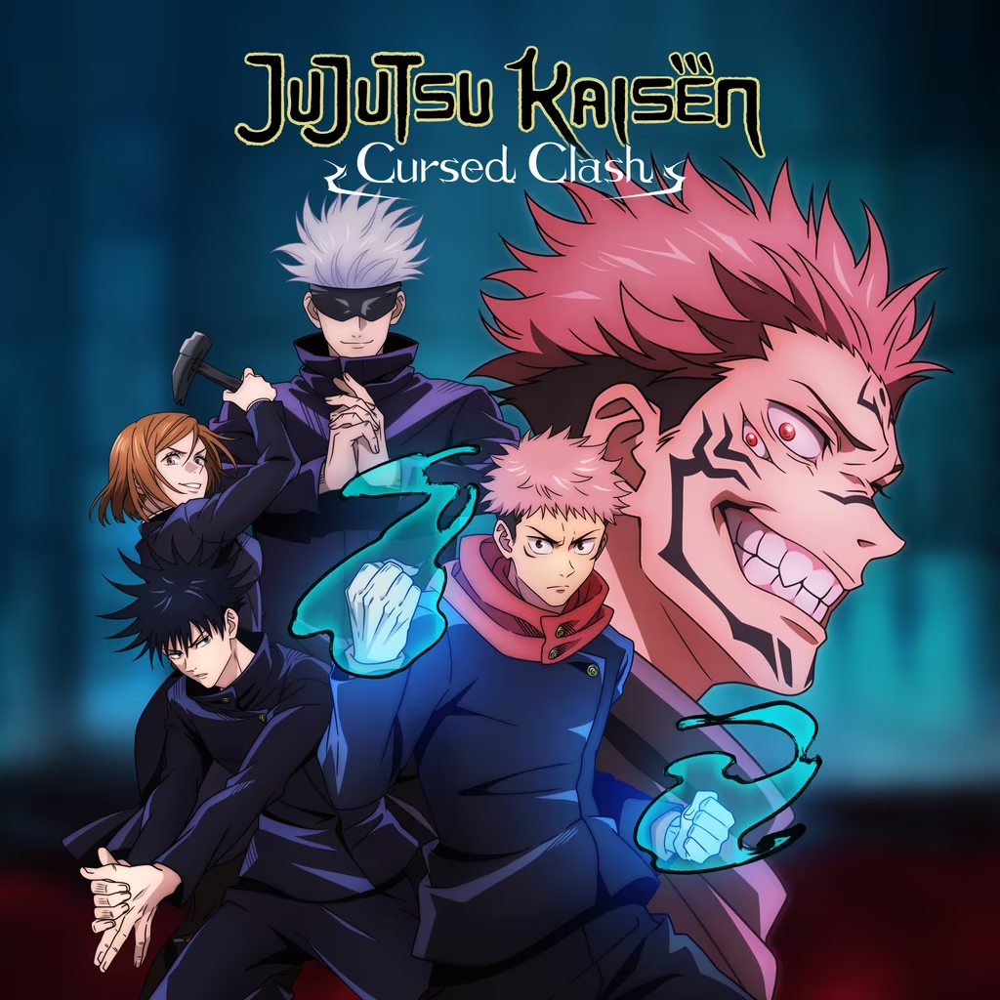
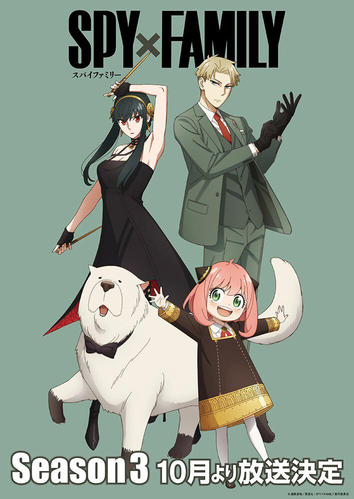
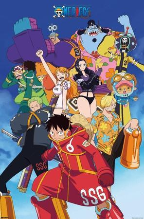

My Favorites

Demon Slayer
Tanjiro Kamado, a kindhearted boy who sells charcoal for a living, finds his family slaughtered by a demon...
Last watched: Episode 12

Jujutsu Kaisen
Yuuji Itadori, a boy with tremendous physical strength, gains cursed energy after eating a finger of Ryomen Sukuna...
Last watched: Episode 18

Death Note
Light Yagami finds a mysterious notebook that grants him the power to kill anyone whose name he writes in it...
Last watched: Episode 22

Spy x Family
A spy, an assassin, and a telepath form a fake family to maintain their covers, not realizing each other's true identities...
Last watched: Episode 10

Vinland Saga
Thorfinn pursues a journey with his father's killer in order to take revenge and end his life in a duel as an honorable warrior...
Last watched: Episode 15

One Piece
Monkey D. Luffy sets off on an adventure with his pirate crew in search of the world's ultimate treasure, the One Piece...
Last watched: Episode 1024